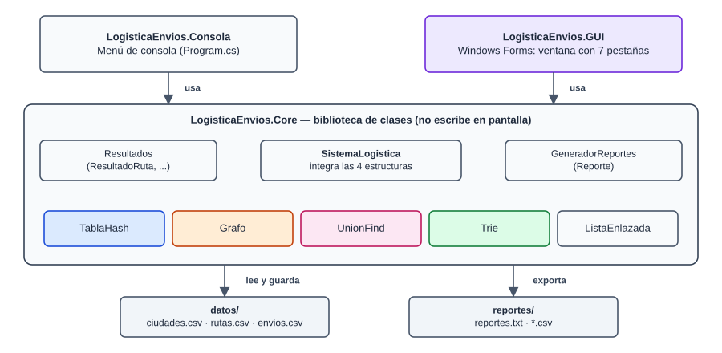
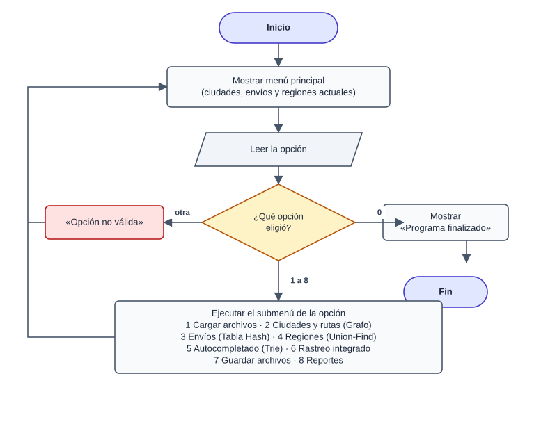
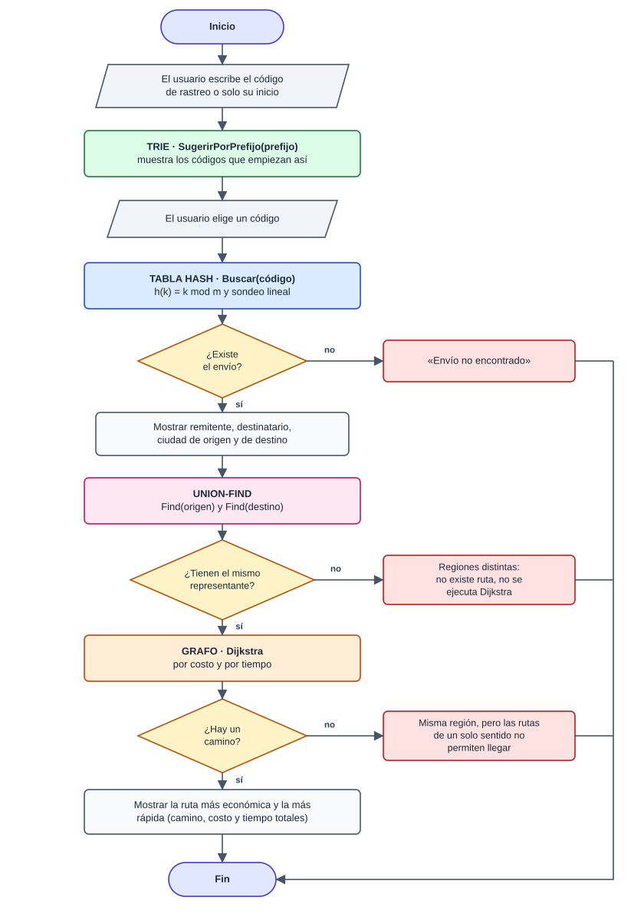
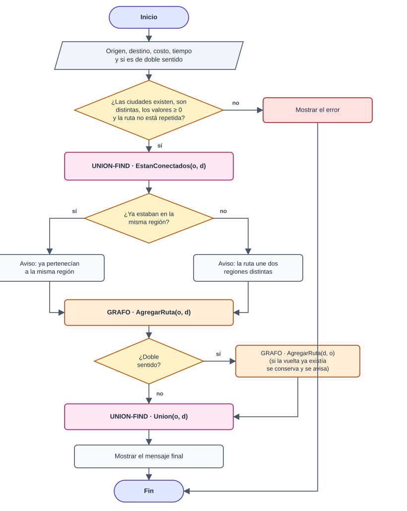
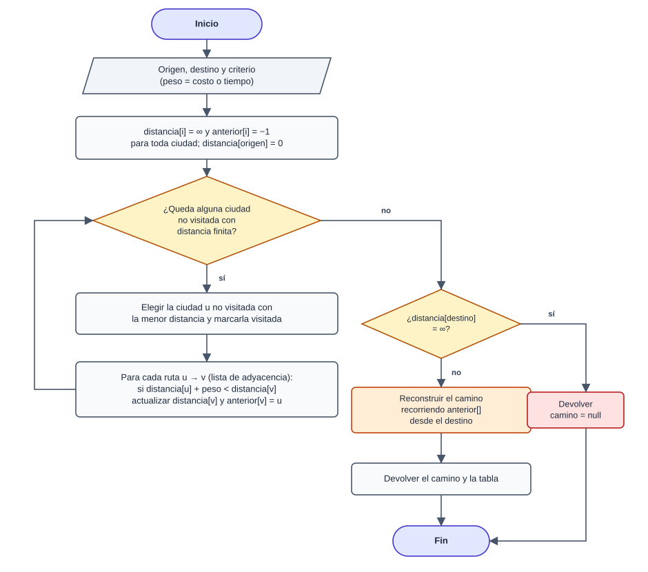
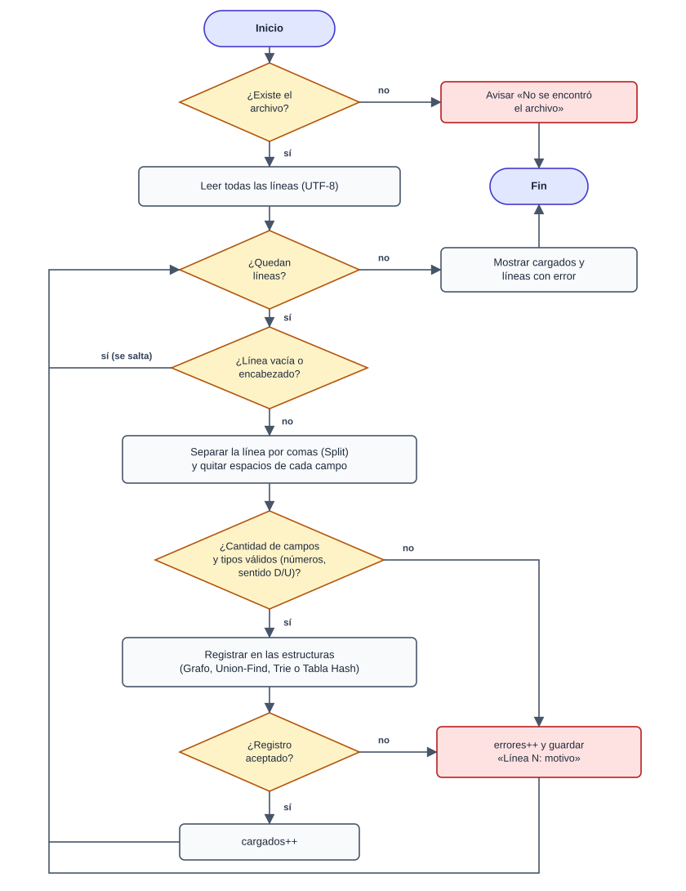
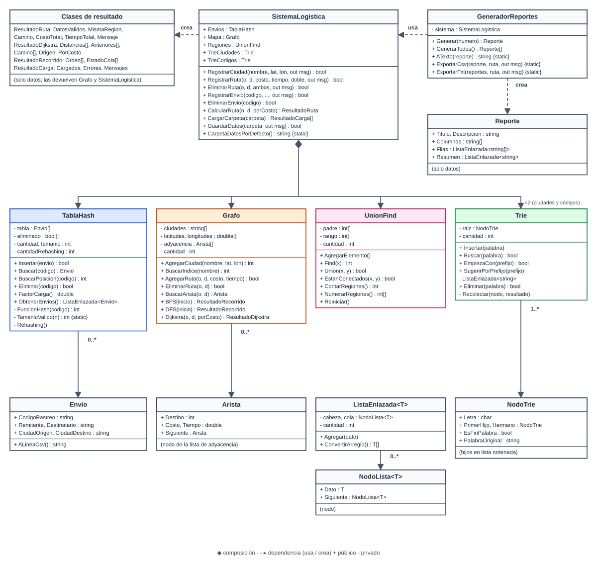
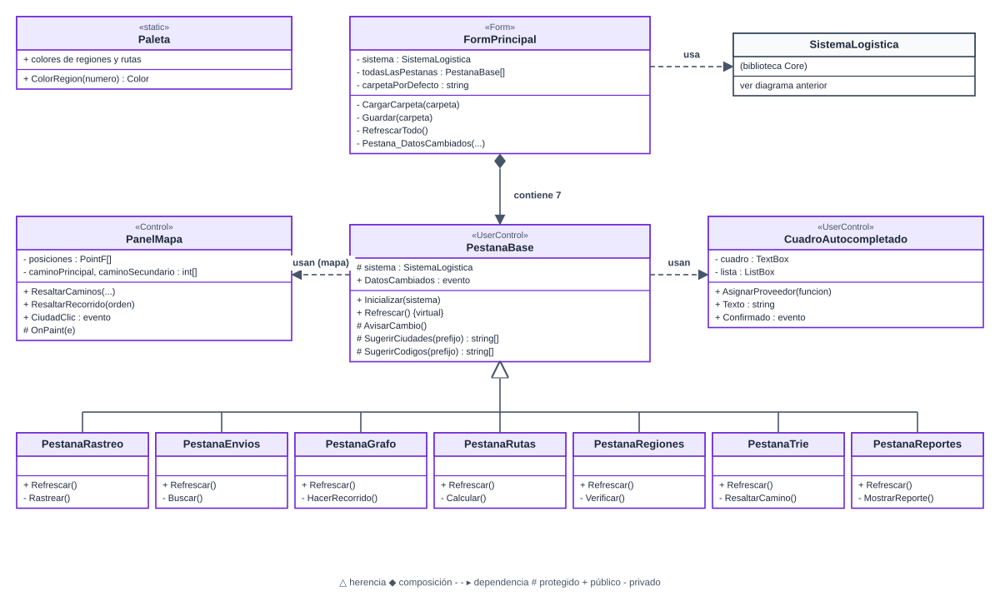

| Escenario | Logística de envíos |
| Lenguaje | C# · .NET 8 · Windows Forms |
| Integrantes | Ángel · Johann · Alexis |
| Fecha | Noviembre de 2026 |
El sistema administra los envíos de una empresa de paquetería que opera entre ciudades de Guatemala. Cada envío tiene un código de rastreo único, remitente, destinatario, ciudad de origen y ciudad de destino. Las ciudades están unidas por rutas de transporte con un costo (en quetzales) y un tiempo (en horas); algunas rutas son de un solo sentido.
Las operaciones que el problema exige, y la estructura que resuelve cada una, son:
| Operación del problema | Estructura | Por qué |
|---|---|---|
| Localizar un envío por su código de rastreo | Tabla Hash | Búsqueda exacta en O(1) promedio. |
| Sugerir nombres de ciudad (y códigos) mientras se escribe | Trie | El costo depende del largo del prefijo, no de la cantidad de palabras. |
| Calcular la ruta más económica o más rápida | Grafo + Dijkstra | Ciudades = vértices, rutas = aristas dirigidas con dos pesos. |
| Recorrer la red de ciudades | Grafo BFS / DFS | Recorridos en O(V + E) sobre listas de adyacencia. |
| Saber si dos ciudades están en la misma región antes de asignar una ruta o de ejecutar Dijkstra | Union-Find | Consulta de conectividad en tiempo casi constante, O(α(n)). |
Todo el código de las estructuras es propio: no se usan List<T>, Dictionary, HashSet,
SortedSet ni PriorityQueue para resolver su lógica. La única colección nativa es Queue<int>,
usada solamente para el orden de visita del recorrido BFS, como permite el enunciado.
El sistema tiene dos interfaces que comparten exactamente la misma lógica: un menú de consola y una
interfaz gráfica en Windows Forms. Además genera reportes para toma de decisiones que se pueden exportar a
.txt y .csv.
net8.0 y tienen
<RollForward>Major</RollForward>: si la computadora solo tiene una versión más nueva de .NET
(por ejemplo .NET 10), el programa se ejecuta con esa.Desde Visual Studio se abre LogisticaEnvios.sln, se hace clic derecho sobre el proyecto que se desea ejecutar
(LogisticaEnvios.GUI o LogisticaEnvios.Consola) → Establecer como proyecto de inicio y se presiona
F5. Desde una terminal, en la carpeta de la solución:
dotnet build LogisticaEnvios.sln dotnet run --project LogisticaEnvios.GUI dotnet run --project LogisticaEnvios.Consola
LogisticaEnvios/ ├─ LogisticaEnvios.sln ├─ LogisticaEnvios.Core/ biblioteca: estructuras, integración y reportes │ ├─ TablaHash.cs Grafo.cs UnionFind.cs Trie.cs ListaEnlazada.cs │ ├─ Envio.cs SistemaLogistica.cs Resultados.cs Reportes.cs ├─ LogisticaEnvios.Consola/ menú de consola (Program.cs) ├─ LogisticaEnvios.GUI/ interfaz gráfica (formularios y controles propios) ├─ datos/ ciudades.csv, rutas.csv, envios.csv ├─ reportes/ se crea al exportar reportes └─ docs/ manuales (PDF) y sus fuentes
La solución tiene tres proyectos. La biblioteca LogisticaEnvios.Core contiene las cuatro estructuras, la clase
SistemaLogistica que las integra y el generador de reportes. Esta biblioteca no escribe en pantalla: sus métodos
devuelven objetos de resultado (ResultadoRuta, ResultadoDijkstra, ResultadoRecorrido,
ResultadoCarga, Reporte). La consola convierte esos resultados en texto y la interfaz gráfica los muestra en
tablas o los dibuja en el mapa. Así ambas interfaces usan exactamente la misma lógica y no se repite código.

| Clase | Proyecto | Responsabilidad |
|---|---|---|
Envio | Core | Dato que guarda la tabla hash (código, remitente, destinatario, origen y destino). |
TablaHash | Core | Guarda los envíos por código de rastreo (direccionamiento abierto con sondeo lineal). |
Grafo, Arista | Core | Ciudades y rutas dirigidas con costo y tiempo; BFS, DFS y Dijkstra. |
UnionFind | Core | Regiones de distribución (ciudades conectadas por alguna cadena de rutas). |
Trie, NodoTrie | Core | Autocompletado de nombres de ciudad y de códigos de rastreo. |
ListaEnlazada<T> | Core | Lista propia para devolver varios resultados sin usar List<T>. |
SistemaLogistica | Core | Integra las estructuras: registra, elimina, calcula rutas, carga y guarda archivos. |
GeneradorReportes, Reporte | Core | Reportes para toma de decisiones y su exportación a .txt y .csv. |
Program | Consola | Menú de consola e impresión de los resultados. |
FormPrincipal y pestañas | GUI | Ventana principal, menú Archivo y una pestaña por cada parte del sistema. |
PanelMapa | GUI | Control propio que dibuja el grafo como mapa y resalta rutas y recorridos. |
CuadroAutocompletado | GUI | Cuadro de texto que pide sugerencias al Trie mientras el usuario escribe. |
Los datos no están quemados en el código: se cargan desde archivos .csv o se ingresan por el menú. La carpeta
predeterminada es datos/ en la raíz de la solución; el método SistemaLogistica.CarpetaDatosPorDefecto() la encuentra
subiendo desde la carpeta del ejecutable hasta hallar LogisticaEnvios.sln. Por eso «Guardar» escribe en los archivos del
proyecto y no en la copia que se genera dentro de bin. Si la solución no se encuentra (por ejemplo, si se copió solo el
ejecutable), se usa la carpeta datos que está junto al ejecutable.
| Archivo | Columnas | Ejemplo |
|---|---|---|
ciudades.csv | nombre[,latitud,longitud] — las coordenadas son opcionales y solo sirven para el mapa | Cobán,15.4708,-90.3711 |
rutas.csv | origen,destino,costo,tiempo,sentido — sentido D (doble) o U (único); si falta se toma D | Cobán,Zacapa,95,3.5,U |
envios.csv | codigo,remitente,destinatario,origen,destino | ENV-1003,Distribuidora El Sol,Tienda La Esquina,Cobán,Huehuetenango |
Los archivos deben cargarse en este orden: ciudades, rutas y envíos, porque una ruta necesita que sus ciudades existan y un envío necesita que existan sus ciudades de origen y destino. La opción «Cargar carpeta» lo hace automáticamente.
Cada línea se procesa como una secuencia de tokens separados por comas. El proceso (Figura 6, sección 7) es:
File.Exists y se leen todas las líneas en UTF-8; si hay un
error de lectura se informa sin detener el programa.nombre, origen o codigo); las líneas vacías se ignoran.linea.Split(',') separa los campos y a cada uno se le quitan los espacios.double.TryParse usando cultura invariante, aceptando punto o coma decimal; el sentido se
reconoce como U o, por omisión, doble sentido.ResultadoCarga).GuardarDatos escribe los tres archivos con StreamWriter en UTF-8. Los números se escriben con cultura invariante
(punto decimal) para que el archivo se pueda volver a leer en cualquier computadora. Una ruta de ida y vuelta con los mismos
valores se guarda en una sola línea con D; si la ida y la vuelta tienen valores distintos, se guardan como dos rutas
U.
Guarda todos los envíos usando como clave el código de rastreo. La operación más frecuente del sistema es localizar un envío exacto (rastreo, búsqueda, eliminación y validación de códigos repetidos), y la tabla hash la resuelve en O(1) en promedio.
Envio?[] tabla guarda los envíos y bool[] eliminado marca las posiciones
borradas. Tamaño inicial: 7.h(k) = k mod m.(h + 1) mod m, (h + 2) mod m, etc.2m + 1 y se reinsertan todos los envíos (las marcas de eliminado desaparecen). Secuencia de
tamaños: 7 → 17 → 37 → 79 → 163…31 mod m no puede ser 0 ni 1. Si fuera 0
(m = 31), la posición dependería solo del último carácter del código; si fuera 1 (m = 3, 5, 15…), dependería solo de la suma
de los caracteres. En ambos casos códigos parecidos como ENV-1001 y ENV-1010 chocarían mucho más.private const int Base = 31;
private int FuncionHash(string codigo)
{
int valor = 0;
foreach (char c in codigo)
{
valor = (valor * Base + c) % tamanio; // método de Horner módulo m
}
return valor;
}
private static int TamanioValido(int n) // primer primo válido >= n
{
if (n < 3) n = 3;
while (!EsPrimo(n) || Base % n == 0 || Base % n == 1)
{
n++;
}
return n;
}
public int BuscarPosicion(string codigo)
{
int indiceInicial = FuncionHash(codigo);
for (int intento = 0; intento < tamanio; intento++) // sondeo lineal
{
int indice = (indiceInicial + intento) % tamanio;
if (tabla[indice] != null && tabla[indice]!.CodigoRastreo == codigo) return indice;
if (tabla[indice] == null && !eliminado[indice]) return -1; // nunca se usó: no existe
}
return -1;
}| Operación | Promedio | Peor caso | Comentario |
|---|---|---|---|
Insertar(envio) | O(1) amortizado | O(n) | Incluye la verificación de código repetido; el rehashing O(n) ocurre pocas veces. |
Buscar(codigo) / BuscarPosicion | O(1) | O(n) | El peor caso ocurre con muchas colisiones seguidas. |
Eliminar(codigo) | O(1) | O(n) | Marca la posición como eliminada. |
Rehashing() | O(n + m) | Recorre la tabla anterior y reinserta. Buscar el siguiente primo cuesta O(√m) por candidato, despreciable frente a la reinserción. | |
ObtenerEnvios() / impresión | O(m) | Recorre todas las posiciones. | |
FactorCarga() | O(1) | cantidad / tamaño. | |
Dictionary<string, Envio> ofrece las mismas complejidades promedio (O(1)) y también crece a tamaños primos, pero
resuelve colisiones con encadenamiento. La implementación propia muestra explícitamente el factor de carga, las colisiones y
el rehashing. En una simulación con 20 códigos consecutivos (ENV-1001 a ENV-1020), usar tamaños primos válidos en
lugar de 2m + 1 (que llegaba a m = 31) bajó el promedio de posiciones revisadas por búsqueda de 6.0 a 2.35 y el peor caso de
20 a 10. Una lista (List<Envio>) necesitaría O(n) por búsqueda y un SortedDictionary O(log n).
Representa la red de transporte: cada ciudad es un vértice y cada ruta es una arista con dos pesos, costo y tiempo. Es dirigido porque existen rutas de un solo sentido; una ruta de doble sentido se guarda como dos aristas. Sobre él se ejecutan BFS, DFS y Dijkstra (por costo para la ruta más económica o por tiempo para la más rápida).
string[] ciudades con arreglos paralelos latitudes y longitudes
(double.NaN = sin coordenadas). Capacidad inicial 10; se duplica al llenarse.Arista?[] adyacencia, donde adyacencia[i] apunta a la
primera arista que sale de la ciudad i; cada Arista guarda destino, costo, tiempo y la siguiente arista.Queue<int> solo para el orden de visita y un arreglo visitados. Devuelve el orden
y el estado de la cola después de cada visita.distancias, anteriores y visitados. En cada paso se elige la
ciudad no visitada con menor distancia recorriendo el arreglo (no se permite PriorityQueue), se relajan sus
aristas y al final se reconstruye el camino con anteriores.for (int paso = 0; paso < cantidad; paso++)
{
int actual = -1; // ciudad no visitada más cercana
double menorDistancia = double.MaxValue;
for (int i = 0; i < cantidad; i++)
if (!visitados[i] && distancias[i] < menorDistancia) { menorDistancia = distancias[i]; actual = i; }
if (actual == -1) break; // no quedan ciudades alcanzables
visitados[actual] = true;
for (Arista? a = adyacencia[actual]; a != null; a = a.Siguiente) // relajación
{
double nueva = distancias[actual] + (porCosto ? a.Costo : a.Tiempo);
if (nueva < distancias[a.Destino]) { distancias[a.Destino] = nueva; anteriores[a.Destino] = actual; }
}
}V = número de ciudades, E = número de aristas, g = grado de salida de la ciudad.
| Operación | Complejidad | Comentario |
|---|---|---|
AgregarCiudad | O(V) | Por la verificación de nombre repetido; el crecimiento del arreglo es O(1) amortizado. |
BuscarIndice(nombre) | O(V) | Recorrido lineal sin distinguir mayúsculas. |
AgregarRuta | O(g) | Revisa que no exista y la agrega al final de la lista. |
BuscarArista / EliminarRuta | O(g) | Recorre la lista de adyacencia del origen. |
BFS / DFS | O(V + E) | Cada ciudad y cada arista se visita una vez. |
Dijkstra | O(V² + E) = O(V²) | Selección lineal del mínimo en cada uno de los V pasos. |
| Memoria | O(V + E) | Lista de adyacencia. |
Con List<List<Arista>> las complejidades serían iguales. Con Dictionary<string, int> para traducir
nombres a índices, BuscarIndice pasaría de O(V) a O(1). Con PriorityQueue (montículo binario), Dijkstra bajaría a
O((V + E) log V), lo que conviene en grafos grandes y dispersos; para una red de decenas de ciudades O(V²) es suficiente. Se
eligió lista de adyacencia y no matriz porque las redes de carreteras son dispersas (E ≈ 2V): la matriz usaría O(V²) de memoria
y recorrer los vecinos costaría O(V).
Agrupa las ciudades en regiones de distribución: dos ciudades están en la misma región si existe alguna cadena de rutas entre ellas. Se consulta en tres momentos:
int[] padre y int[] rango; cada ciudad usa el mismo índice que tiene en el grafo.Reiniciar) y se vuelven a unir recorriendo todas las aristas del grafo.public int Find(int x)
{
if (padre[x] != x)
padre[x] = Find(padre[x]); // compresión de camino
return padre[x];
}
public bool Union(int x, int y)
{
int raizX = Find(x), raizY = Find(y);
if (raizX == raizY) return false; // ya estaban en la misma región
if (rango[raizX] < rango[raizY]) padre[raizX] = raizY;
else if (rango[raizX] > rango[raizY]) padre[raizY] = raizX;
else { padre[raizY] = raizX; rango[raizX]++; }
return true;
}| Operación | Complejidad | Comentario |
|---|---|---|
Find, Union, EstanConectados | O(α(n)) amortizado | α es la inversa de Ackermann: menor que 5 para cualquier n práctico. |
AgregarElemento | O(1) amortizado | Los arreglos se duplican al llenarse. |
ContarRegiones, NumerarRegiones | O(n · α(n)) | Un Find por elemento. |
Reiniciar | O(n) | Cada elemento vuelve a ser su propia raíz. |
| Reconstrucción al eliminar una ruta | O(n + E · α(n)) | Una unión por cada arista del grafo. |
.NET no tiene una estructura de conjuntos disjuntos. Las alternativas serían ejecutar un BFS por cada consulta, O(V + E), o
mantener un HashSet<int> por región y fusionarlos, O(n) por unión. Union-Find responde en tiempo prácticamente constante.
Detalle importante: Union-Find trata las rutas como no dirigidas (solo indica si hay conexión). Dos ciudades pueden estar en la misma región y aun así no ser alcanzables por culpa de rutas de un solo sentido. El sistema lo detecta porque Dijkstra devuelve un camino nulo, y lo informa con un mensaje propio (por ejemplo, San Benito → Poptún en los datos de ejemplo).
Sugiere nombres de ciudad (y códigos de rastreo) a partir de las primeras letras que escribe el usuario. Hay dos tries: uno de ciudades y uno de códigos. En la consola, si el usuario escribe un nombre incompleto, se muestran las sugerencias numeradas; en la interfaz gráfica, las sugerencias aparecen en una lista debajo del cuadro mientras se escribe.
NodoTrie guarda una letra, PrimerHijo, Hermano, EsFinPalabra y
PalabraOriginal. Como no se permite Dictionary, los hijos forman una lista enlazada
(representación «primer hijo – siguiente hermano»).Eliminar desmarca el fin de palabra y quita los nodos que quedan sin uso, subiendo por el camino guardado.L = largo de la palabra o prefijo, σ = cantidad máxima de hermanos que se revisan en un nivel (a lo sumo el tamaño del alfabeto usado), K = cantidad de nodos debajo del prefijo.
| Operación | Complejidad | Comentario |
|---|---|---|
Insertar | O(L · σ) | Reutiliza los nodos de los prefijos comunes. |
Buscar, EmpiezaCon | O(L · σ) | No depende de cuántas palabras hay. |
SugerirPorPrefijo | O(L · σ + K) | Baja hasta el prefijo y recolecta el subárbol en orden. |
Eliminar | O(L · σ) | Incluye la limpieza de nodos sin uso. |
| Memoria | O(total de caracteres) | Los prefijos comunes se comparten. |
Con una List<string> y StartsWith cada sugerencia costaría O(N · L), revisando todas las palabras.
SortedSet<string>.GetViewBetween lograría O(log N + K). En el Trie el costo depende del largo del prefijo y de los resultados,
no del total de palabras. Usar un arreglo o diccionario de hijos por nodo daría acceso O(1) a cada hijo a cambio de más memoria;
la lista ordenada de hermanos usa solo la memoria necesaria.
Lista simplemente enlazada con referencia a la cola. Se usa para devolver varios resultados (sugerencias del Trie, envíos de la
tabla hash, mensajes de carga, filas de reportes, orden de recorridos) sin usar List<T>. Agregar es O(1) y
ConvertirArreglo es O(n).
La clase SistemaLogistica coordina las cuatro estructuras dentro de un mismo flujo. Ninguna estructura queda aislada:
| Operación | Estructuras que participan (en orden) |
|---|---|
| Registrar ciudad | Grafo agrega el vértice → Union-Find crea su región → Trie guarda el nombre. |
| Registrar ruta | Trie sugiere las ciudades → Union-Find informa si ya estaban conectadas → Grafo agrega la arista (y la vuelta) → Union-Find une las regiones. |
| Eliminar ruta | Grafo quita la arista → Union-Find se reconstruye a partir de las aristas. |
| Registrar envío | Tabla Hash valida que el código no exista → Grafo valida las ciudades → Tabla Hash inserta → Trie guarda el código → Union-Find advierte si no hay ruta. |
| Eliminar envío | Tabla Hash elimina → Trie quita el código. |
| Rastrear envío (flujo integrado) | Trie sugiere el código → Tabla Hash localiza el envío → Union-Find valida la conectividad → Grafo ejecuta Dijkstra por costo y por tiempo. |
| Reportes | Usan las cuatro estructuras (sección 10). |
El cálculo de rutas aplica la regla del enunciado: Union-Find valida la conectividad antes de ejecutar Dijkstra.
public ResultadoRuta CalcularRuta(string origen, string destino, bool porCosto)
{
...
if (!Regiones.EstanConectados(o, d)) // Union-Find
{
resultado.Mensaje = "... pertenecen a regiones distintas ... no se ejecuta Dijkstra.";
return resultado;
}
resultado.MismaRegion = true;
resultado.Dijkstra = Mapa.Dijkstra(o, d, porCosto); // Grafo
resultado.Camino = resultado.Dijkstra.Camino; // null si las rutas de un solo sentido no permiten llegar
...
}






La consola (Program) es una clase estática con un campo SistemaLogistica sistema, un método por menú y las
funciones de impresión que convierten los resultados en texto.
Resumen de las operaciones principales. n = envíos, m = tamaño de la tabla hash, V = ciudades, E = aristas, g = grado de salida, L = largo del texto, σ = hermanos revisados por nivel, K = nodos del resultado.
| Estructura | Operación | Implementación propia | Alternativa nativa de .NET |
|---|---|---|---|
| Tabla Hash | Insertar | O(1) promedio · O(n) peor | Dictionary.Add: O(1) promedio |
| Buscar | O(1) promedio · O(n) peor | Dictionary.TryGetValue: O(1) promedio · List.Find: O(n) | |
| Eliminar | O(1) promedio · O(n) peor | Dictionary.Remove: O(1) promedio | |
| Grafo | Buscar ciudad por nombre | O(V) | Dictionary<string,int>: O(1) |
| Agregar / buscar / eliminar ruta | O(g) | List<Arista>: O(g) | |
| BFS / DFS | O(V + E) | O(V + E) (igual) | |
| Dijkstra | O(V²) | PriorityQueue: O((V + E) log V) | |
| Memoria | O(V + E) | Matriz de adyacencia: O(V²) | |
| Union-Find | Find / Union | O(α(n)) amortizado | Sin equivalente; BFS por consulta: O(V + E) |
| ¿Misma región? | O(α(n)) | HashSet por región: O(1) consulta, O(n) por unión | |
| Reconstruir tras eliminar ruta | O(V + E · α(V)) | — | |
| Trie | Insertar / Buscar | O(L · σ) | HashSet<string>: O(L) promedio (sin prefijos) |
| Sugerir por prefijo | O(L · σ + K) | List + StartsWith: O(N · L) · SortedSet: O(log N + K) | |
| Eliminar | O(L · σ) | List.Remove: O(N) | |
| Lista enlazada | Agregar / a arreglo | O(1) / O(n) | List.Add: O(1) amortizado / ToArray: O(n) |
| Flujo | Complejidad |
|---|---|
| Rastrear un envío | Trie O(L · σ + K) + Tabla Hash O(1) + Union-Find O(α(V)) + 2 × Dijkstra O(V²) = O(V²) |
| Registrar ruta | 2 × BuscarIndice O(V) + Union-Find O(α(V)) + AgregarRuta O(g) = O(V) |
| Registrar envío | Tabla Hash O(1) + 2 × BuscarIndice O(V) + Trie O(L · σ) = O(V) promedio |
| Cargar archivo de rutas con R líneas | O(R · V) |
La clase GeneradorReportes arma cuatro reportes. Cada uno es una tabla (columnas y filas) más un resumen con conclusiones
y recomendaciones. Se muestran en la consola (opción 8) y en la pestaña «Reportes», y se exportan a .txt (todos juntos) o
a .csv (uno por archivo, con comillas cuando un campo tiene comas y UTF-8 con BOM para que Excel muestre las tildes).
| Reporte | Qué calcula | Estructuras | Complejidad |
|---|---|---|---|
| Costo y tiempo estimado por envío | Ruta más económica y más rápida de cada envío, totales, promedio, envío más costoso y ahorro de tiempo posible. | Tabla Hash, Union-Find, Grafo | O(n · V²) |
| Envíos sin ruta posible | Envíos que no se pueden despachar, motivo (regiones distintas o rutas de un solo sentido) y la conexión más corta sugerida entre regiones (fórmula del haverseno con las coordenadas). | Tabla Hash, Union-Find, Grafo | O(n · V² + V²) |
| Envíos por región | Por región: ciudades, envíos que salen, llegan, internos y hacia otra región. | Union-Find, Tabla Hash | O(n · V) |
| Ciudades con más conexiones | Ranking por ciudades vecinas, rutas de entrada y salida y envíos; sugiere el centro de distribución y señala ciudades que dependen de una sola conexión o a las que no llega ninguna ruta. | Grafo, Union-Find, Tabla Hash | O(V² · g) |
Los envíos se ordenan por código y las ciudades por conexiones con ordenamiento por inserción propio, O(k²), sin usar
Array.Sort ni List.Sort.
La interfaz está hecha con Windows Forms. Los formularios siguen el formato del diseñador de Visual Studio
(*.Designer.cs), así que se pueden abrir y modificar visualmente.
SistemaLogistica que comparte con todas las pestañas.AvisarCambio(), la
ventana recibe el evento DatosCambiados y ejecuta Refrescar() en todas, para que lo registrado en una se vea
en las demás.SugerirPorPrefijo del Trie y muestra el resultado
en una lista flotante. No se usa AutoCompleteCustomSource de WinForms porque guarda las palabras en una colección
nativa y se saltaría el Trie.| Pestaña | Estructuras que muestra |
|---|---|
| Rastrear envío | Las cuatro, paso a paso, con las dos rutas en el mapa. |
| Envíos · Tabla Hash | Cada posición de la tabla (ocupada, eliminada o vacía), factor de carga, rehashing, h(k) y sondeo. |
| Ciudades y rutas · Grafo | Registro de ciudades y rutas, BFS y DFS numerados en el mapa, lista de adyacencia. |
| Ruta óptima · Dijkstra | Union-Find + Dijkstra, tabla de distancias y anteriores, camino en el mapa. |
| Regiones · Union-Find | Regiones con su color, arreglos padre y rango, verificación con Find. |
| Autocompletado · Trie | Búsqueda por prefijo y el árbol del Trie tal como está en memoria. |
| Reportes | Los cuatro reportes con exportación. |
El enunciado prohíbe usar colecciones nativas para resolver la lógica de las estructuras. El uso de tipos nativos se limita a:
| Tipo nativo | Dónde | Para qué |
|---|---|---|
Arreglos (T[]) | Todas las estructuras | Almacenamiento base; no son colecciones dinámicas. |
Queue<int> | Grafo.BFS | Únicamente el orden de visita del BFS (permitido por el enunciado). |
string, StringBuilder, Split, Trim, ToLower | Todo el proyecto | Manejo de cadenas. |
File, StreamWriter, Directory, Path | Carga, guardado y exportación | Lectura y escritura de archivos. |
double.TryParse, CultureInfo, Math | Carga y reportes | Conversión de números y cálculos. |
Controles de WinForms (DataGridView, ListBox, TreeView) | Interfaz gráfica | Solo muestran datos que ya calcularon las estructuras propias. |
| Tema | Situación actual | Mejora posible |
|---|---|---|
| Dijkstra | O(V²) por la selección lineal del mínimo. | Montículo binario propio: O((V + E) log V). |
| Búsqueda de ciudad por nombre | O(V) lineal. | Una segunda tabla hash de nombre → índice: O(1). |
| Eliminar ruta | Union-Find se reconstruye completo, O(V + E · α). | Aceptable para el tamaño del problema. |
| Eliminar ciudad | No se ofrece, porque los índices del grafo y del Union-Find son compartidos. | Marcar la ciudad como inactiva en lugar de borrarla. |
| Agrupamiento del sondeo lineal | Códigos consecutivos (ENV-3001, ENV-3002…) caen en posiciones consecutivas y forman bloques; es el comportamiento normal del sondeo lineal. | Sondeo cuadrático o doble hashing. |
Según el enunciado, cada integrante debe dominar al menos una de las estructuras obligatorias y poder defenderla individualmente. Completar esta tabla cuando el grupo reparta las estructuras, y actualizar también el comentario «Responsable» al inicio de cada archivo.
| Componente | Archivo | Responsable |
|---|---|---|
| Tabla Hash | TablaHash.cs | Por definir |
| Grafo (BFS, DFS, Dijkstra) | Grafo.cs | Por definir |
| Union-Find | UnionFind.cs | Por definir |
| Trie | Trie.cs | Por definir |
| Integración y reportes | SistemaLogistica.cs, Reportes.cs | Por definir |
| Menú de consola | Program.cs (Consola) | Por definir |
| Interfaz gráfica | LogisticaEnvios.GUI | Johann |
| Manual técnico y de usuario | docs/ | Alexis |